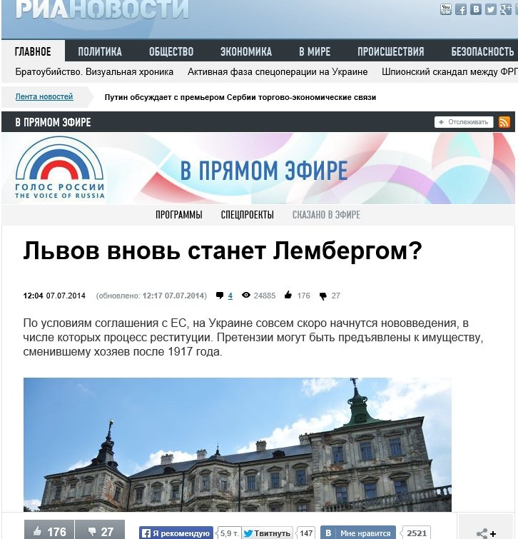

Ложь: В Украине смогут предъявлять претензии к имуществу, сменившему хозяев после 1917 года
Российское информагентство «РИА Новости» 7 июля сообщило о том, что по условиям соглашения с ЕС, в Украине совсем скоро начнутся нововведения, в числе которых — процесс реституции (возврата собственности бывшим владельцам).Претензии якобы могут быть предъявлены к имуществу, сменившему хозяев после 1917 года.
«Украина готовится к реституции.По условиям cоглашения с Евросоюзом, подписанным 27 июня, украинское законодательство необходимо адаптировать к нормам ЕС.Среди них — процесс обязательной реституции.То есть возврата 'незаконно национализированной' собственности ее настоящим владельцам либо их наследникам», — пишут «РИА Новости».
«Львов легко может стать и Лембергом.Это название город носил до 1918 года, когда входил в состав Австро-Венгрии», — утверждает автор публикации Светлана Калмыкова.
Все эти допущения автора статьи не имеют под собой никаких оснований.
Во-первых, договор Украины об ассоциации с Европейским союзом не имеет никакого отношения к вопросам реституции.
В тексте договора термины: реституция, восстановление, отозвание, возвращение прав, национализация, национализированное имущество, — не встречаются.
Во-вторых, даже если допустить, что автор публикации имела в виду не положения договора, а нормы ЕС в целом, нужно подчеркнуть, что адаптация законодательства к нормам ЕС и полное принятие норм ЕС – вовсе не одно и то же.Адаптация– это примерное сближение права в выборочных отраслях.Это и утверждает преамбула договора об ассоциации, ссылаясь на аспекты, упоминаемые в договоре.
Адаптация — обеспечение приблизительного соответствия (апроксимации) украинского законодательства положениям права ЕС, причем не во всех, а в приоритетных сферах, «принимая на себя обязательства по постепенному сближению законодательства Украины с законодательством ЕС в аспектах, изложенных в настоящем Соглашении, и по эффективному выполнению последнего», — сказано в преамбуле договора об ассоциации.
Учитывая то, что сам договор ограничивается преимущественно вопросами сотрудничества в экономической сфере, он никак не может касаться вопросов реституции.
В-третьих, вопрос реституции не регулируется общим законодательством ЕС.Поэтому, даже если бы Украина должна была бы полностью приблизить свое законодательство к нормам ЕС, о реституции вопрос бы даже не шел.
Вопросы реституции в странах ЕС определяются исключительно внутренним законодательством каждой из стран ЕС.Об этом свидетельствуют решения Европейского суда по правам человека.Например, суд рассматривал дело «Звольски и Звольска (Zvolský и Zvolská) против Чешской республики» от 12 ноября 2002 года, в котором речь шла о реституции имущества, национализированного при коммунистическом режиме. Также суд вынес решение по вопросам реституции в деле «Пинкова и Пинк (Pincová и Pinc) против Чешской Республики» от 5 ноября 2002 года.В обоих случаях суд оценивал аспекты применения именно внутреннего законодательства Чехии, в котором предусматривалась возможность и процедура реституции.
Что же касается переименования города Львов в Лемберг, то это допущение основывается лишь на предположении, что многие европейцы смогут вернуть себе большую часть австро-венгерской собственности и захотят переименовать украинские города по своему усмотрению.А так как это в ближайшее время будет невозможно, то и город никто переименовывать не будет.
Posted On: 2014-07-07T21:00:00

Content Date: 2014-07-07
Download Date: 2021-07-16
Document ID: L0C04FDY5